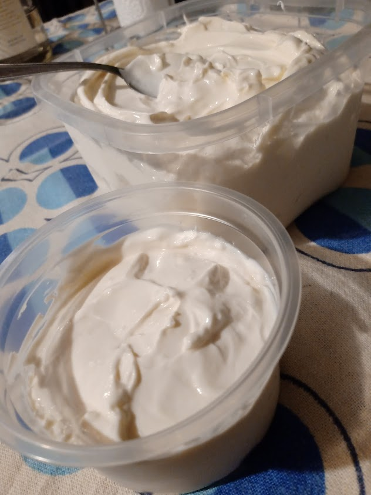

Yogurt Griego
El alimento perfecto para tus musculos

Sano, delicioso… Este alimento versátil y rico en proteínas ayuda al organismo en mucho frentes.
Los efectos beneficiosos del yogur griego derivan principalmente de su alto contenido en proteínas biodisponibles
–es decir, fácilmente absorbibles y que van directas a mantener la masa muscular magra–,
pero también de un bajo (por no decir nulo) contenido en azúcar y lactosa, por lo que también pueden consumirlo las personas diabéticas
y las intolerantes a los productos lácteos. Los probióticos (o bacterias lácticas) que contiene contribuyen al equilibrio de la flora intestinal,
facilitan la absorción de vitaminas y minerales en el organismo, equilibran el metabolismo y también reducen la inflamación abdominal.
El yogur griego tiene una alta concentración de minerales, entre ellos el calcio, pero también vitaminas hidrosolubles del grupo B y vitamina A (retinol),
así como el aminoácido leucina, que aumenta la sensación de saciedad y disminuye la necesidad de picar constantemente,
una característica que lo hace adecuado para incluirlo en dietas para adelgazar pero también para quienes llevan una vida ajetreada y
quieren mantener el hambre a raya durante más tiempo sin perder energía.
Ingredientes:
- Leche x 1 lt.
- Yogurt neutro x 4 cucharadas.
Pasos:
- Poner una olla con la leche a calentar a fuego medio.
- Revolver de vez en cuando.
- Antes que hierva la leche, probar la temperatura con la "prueba del dedito" (poner el dedo en la leche y mantenerlo hasta 10 segundos sin quemarse)
- Poner la leche en un tupper.
- Agregarle las cucharadas de yogurt a la leche y revolver bien.
- Tapar el tupper y envolverlo en colchas o manteles. LA idea es que la leche mantenga cierta temperatura.
- Dejarlo minimo 8 hs y maximo 12 hs que fermente.
- Sacarlo del tuper y ponerlo en un colador. ESte colador tienes que ponerle un trapo para que filtre el yogurt.
- Dejarlo colar hasta que tenga la concistencia deseada. Cuanto mas tiempo mas solido va a ser.
Y ahora a super disfrutar!
LO mas genial del yogurt griego es que lo podes combinar con lo que quieras y queda genial!